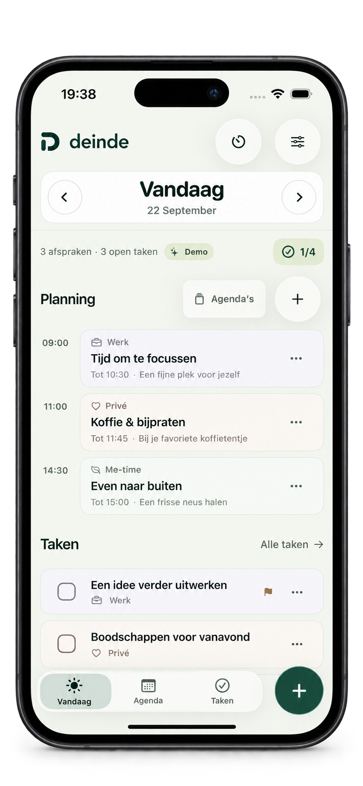
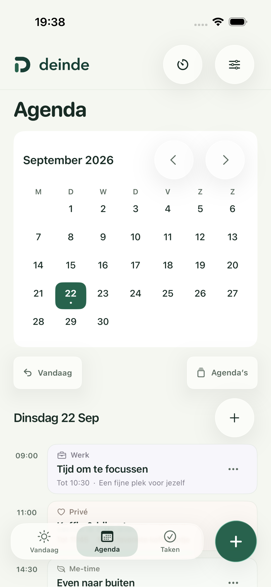
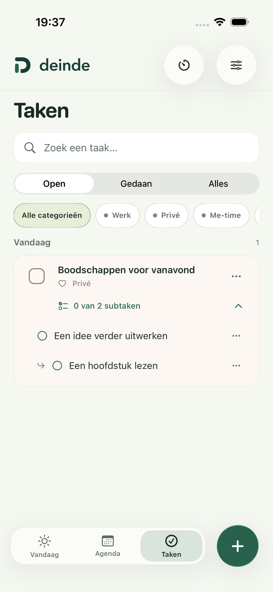
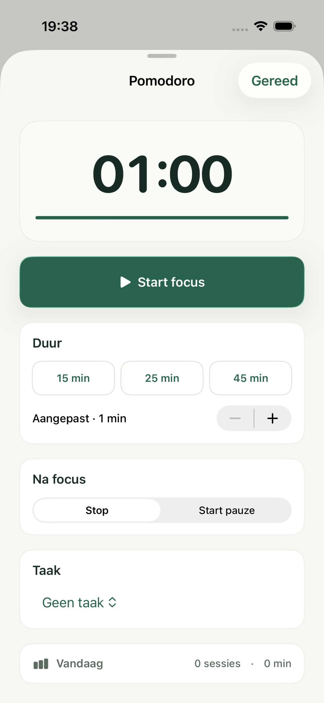

Een blik is genoeg.
Zie je open taken in een widget op je begin- of toegangsscherm. De beginschermwidget volgt de kleuren en uitstraling van je app.
JOUW DAG. JOUW TEMPO.
Afspraken, taken en een moment om te focussen. Deinde brengt het samen, zodat jij ruimte hebt voor je volgende stap.
Ontdek DeindeVoor iPhone en iPad · Binnenkort in de App Store

VAN VOL HOOFD NAAR OVERZICHT
Deinde is een dagplanner die met je meebeweegt. Zie wat er op je agenda staat, maak ruimte voor je taken en pas je planning aan als je dag anders loopt.

01 / JE DAG IN BEELD
Van je eerste afspraak tot die ene taak die je nog wilt doen. Bekijk alles in je dagoverzicht of kijk alvast vooruit in de maandagenda.

02 / EEN STAP TEGELIJK
Geef je taken een plek. Sleep ze in de juiste volgorde of deel ze op in subtaken, met nog één extra laag als je die nodig hebt.

03 / EVEN ALLE AANDACHT
Kies een taak, zet de Pomodoro-timer en werk op je eigen tempo. Jij bepaalt hoelang je focust en wanneer je pauze neemt.
Je lopende sessie blijft zichtbaar op het toegangsscherm en, op ondersteunde iPhones, in Dynamic Island.
Zie je open taken in een widget op je begin- of toegangsscherm. De beginschermwidget volgt de kleuren en uitstraling van je app.
Licht, donker of automatisch. Kies je accentkleur, richt je categorieën in en maak een overzicht dat voor jou prettig werkt.
Geen advertenties, geen tracking en geen extra account. Je planning staat op je apparaat, met synchronisatie via je eigen iCloud-account.
Lees het privacybeleidRUIMTE VOOR JE VOLGENDE STAP
Deinde voor iPhone en iPad.
Binnenkort in de App Store.